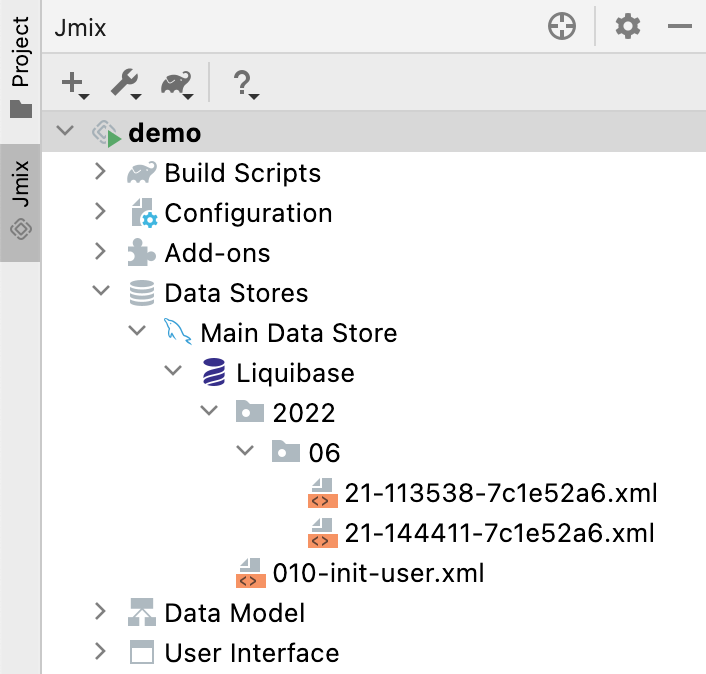

What’s New
This section covers new features of Jmix framework and Studio 1.3, as well as some breaking changes to be aware of when upgrading from a previous version of the framework.
How To Upgrade
| To create new projects with Jmix 1.3 or to upgrade an existing project, you need Studio 1.3 or later, so update your Jmix Studio plugin first. |
See Upgrading Project section for how to upgrade your project using Studio. The automatic migration procedure makes the following changes in your project:
-
Updates the version of Jmix BOM which in turn defines versions of all dependencies.
-
Updates the version of Jmix Gradle plugin.
-
Updates the version of Gradle wrapper to 7.4.2 in
gradle/wrapper/gradle-wrapper.properties. -
Renames the
jmix.rest.allowed-originsapplication property tojmix.cors.allowed-origins(see below).
New Features and Improvements
JPQL Designer
The JPQL designer in Studio can now be used for editing existing queries. It is opened when you click on the query attribute of a data container in the Component Inspector tool window:
You can also open the designer for queries defined in code using the gutter icon:
|
This feature requires a RAD or Enterprise subscription. If you don’t have the subscription, see how to get the trial version. |
Liquibase Changelogs
-
Studio now shows existing Liquibase changelog files in the Jmix tool window under the data store node:
 -
You can create a new empty changelog file using the New → Advanced → Liquibase Changelog… action of the Jmix tool window. Studio will suggest a file name and create a file with the root XML node. You can open the file and add your changesets manually with the help of code completion.
-
File names of new changelogs created automatically and manually now include the timestamp in the
HHmmssformat (instead of previously added sequential numbers 010, 020, …). It should eliminate duplication of changelogs when switching VCS branches.If you want to revert to sequential numbers, open Navigate → Search Everywhere (or press Shift twice) and type "jmix features". In the Jmix Features dialog, disable the Use timestamp in changelog names option.
-
For automatically generated changelogs, Studio allows you to change the file name and path in the Changelog Preview window before saving and executing the changelog.
-
Studio now prevents accidental deletion of important changelogs. If it finds the
<!-- DO NOT REMOVE. some explanation -->comment in a deleted changelog file, it shows a dialog with the suggestion to restore it. The master changelog and the changelog initializingUserscheme and data are protected by such comments.
Hot Deploy
-
Now you can see messages about hot deploy in the Studio debug console, for example:
Hot deploy: CustomerBrowse.java [618 ms] Compiled files: com/company/demo/screen/customer/CustomerBrowse.java -
If you use another technology for code reload like JRebel, you can turn the hot deploy off in the IDE settings: Languages & Frameworks → Jmix → Project Settings → Enable hot deploy.
BPM Improvements
-
BPMN designer in Studio has been improved significantly and now it is comparable in features with the runtime designer.
-
Support for multitenancy in user groups, process definitions, process instances and DMN tables.
-
Captions of user task forms now don’t have any "Claim % task" or "Complete %task" captions. If a user task has a name, it is used as the form caption. If there is no name, the task identifier is used.
-
Support for process variables of the
BigDecimaltype. -
If the Dynamic Attributes add-on is included in the project, the Entity Data task allows you to set and update dynamic attribute values.
-
Task local variables are now displayed in the process instance editor.
Compatibility with Elasticsearch 8.1
The Search add-on can now be used with Elasticsearch 8.1.
By default, the add-on is configured for Elasticsearch version 7.11 and above. If you need to use a version below 7.11, set the jmix.search.rest-high-level-client-api-compatibility-mode-enabled application property to false.
Support for JPA Cascade
JPA cascade operations are now fully supported. Let’s consider this improvement on an example.
Suppose you have two related entities:
@Entity
public class Bar {
// ...@Entity
public class Foo {
@JoinColumn(name = "BAR_ID")
@ManyToOne(fetch = FetchType.LAZY, cascade = CascadeType.ALL)
private Bar bar;
// ...Then you can create instances of the entities and save only Foo instance. Bar instance will be saved by JPA automatically thanks to cascade = CascadeType.ALL annotation parameter:
Foo foo = dataManager.create(Foo.class);
Bar bar = dataManager.create(Bar.class);
foo.setBar(bar);
dataManager.save(foo);In the previous versions the cascading also saved the related instance implicitly, but not all mechanisms of the framework properly handled it. Now the following features completely support instances saved by cascading:
-
Entity events are published
-
Dynamic attributes are saved
-
Entity log records are created
-
Data access control is checked
-
Cross-datastore references are handled.
Improved DTO Screen Templates
Screen templates for DTO entities now include loaders in XML descriptors, as well as load and commit delegates in controllers. It makes them easier to use for working with external data sources.
Role Management Improvements
Resource and row-level role screens have been improved:
-
Filter by name, code and source (annotated class / database) is available when managing roles and assigning to users.
-
Export/import actions allow you to transfer the roles configuration between application instances.
-
Row-level policy editor now offers code completion for JPQL, Check syntax action and link to documentation.
Handling Uniqueness
In this release, we revised the support for unique entity attributes in Studio. Previously, Studio used the unique = true attribute of the @Column annotation as a signal to create a unique constraint in the database. This constraint was not represented in the @Table(uniqueConstraints) annotation, which could conflict with information defined on the Indexes tab of the entity designer. Also, it might give a wrong impression that the framework handles uniqueness somehow itself, while in fact Jmix always relied on the database unique constraints.
We’ve decided that there should be only one clear way to configure uniqueness - using database constraints on the Indexes tab of the entity designer.
Therefore we removed the implicit Studio functionality: the Unique checkbox in the entity designer, and the automatic generation of an additional non-null attribute and a database trigger for soft-deleted entities on MySQL. The documentation now contains detailed recommendations on how to implement unique constraints for soft-deleted entities.
Miscellaneous
Export/import of Dynamic Attributes Configuration
Now you can export dynamic attributes categories to transfer the configuration to another application instance.
Pessimistic Lock Expiration
Pessimistic locks on entities defined using the @PessimisticLock annotation now automatically expire if you include the Quartz add-on to your project. You can customize the locks expiration schedule using the following property:
jmix.core.pessimistic-lock.expiration-cron=0 * * * * ?If you want to switch off the built-in expiration scheduler, set this property to false:
jmix.core.pessimistic-lock.use-default-quartz-configuration=falseLazy Loading in Kotlin Entities
When creating collection attributes in Kotlin entities, Studio now generates field initializers with io.jmix.data.impl.lazyloading.NotInstantiatedList and io.jmix.data.impl.lazyloading.NotInstantiatedSet collections instead of mutableListOf(), mutableSetOf() or another standard collection. For example:
@Composition
@OneToMany(mappedBy = "foo")
var bars: List<Bar> = NotInstantiatedList()Usage of the special collections ensures correct lazy loading of the attributes.
Input Prompt in Picker Components
The inputPrompt attribute has been added to ValuePicker, ValuesPicker and EntityPicker components.
Filter Date Interval Condition
The Year option has been added to the filter date interval conditions.
Bulk Edit in Entity Inspector
BulkEditAction has been added to Entity Inspector.
Preview Features
One-Click Cloud Deployment Preview
Studio can now quickly deploy your application to AWS EC2 cloud.
This feature is currently in the preview state and not available by default. To test it with your project, open Navigate → Search Everywhere (or press Shift twice) and type "jmix features". In the Jmix Features dialog, enable the One-click cloud deployment option.
Flow UI Preview
This release includes the preview version of the UI module based on Vaadin 23. You can take a look at it if you create a new project using the "Full-Stack Application with Experimental FlowUI" template.
| The FlowUI module is in active development and will be changed significantly in subsequent patches of release 1.3. Please don’t expect any compatibility until we announce its final version. |
Breaking Changes
CORS Configuration
The new jmix.cors.allowed-origins property should be used instead of jmix.rest.allowed-origins. If you have configured this property, just rename it and keep its value as is. The Studio automatic migration procedure does it for you.
Also, you can use other CORS properties introduced in this release to fine-tune your CORS settings.